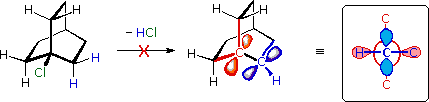
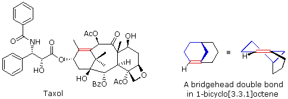
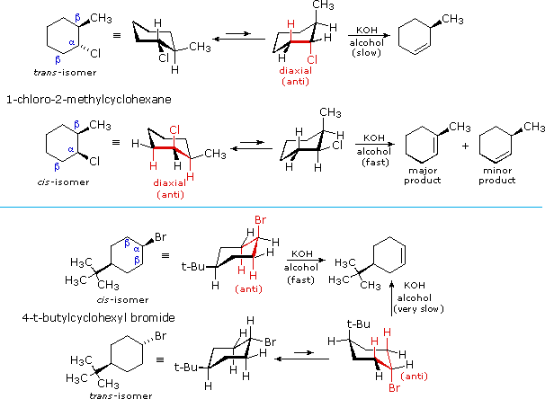
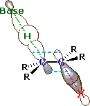
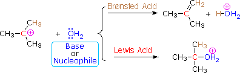

We have not yet considered the factors that influence elimination reactions, such as example 3 in the group presented at the beginning of this section.
In the methanol solvent used here, methanethiolate has greater nucleophilicity than methoxide by a factor of 100. Methoxide, on the other hand is roughly 106 times more basic than methanethiolate.
By using the strongly basic hydroxide nucleophile, we direct these reactions toward elimination. In both cases there are two different sets of beta-hydrogens available to the elimination reaction (these are colored red and magenta and the alpha carbon is blue). If the rate of each possible elimination was the same, we might expect the amounts of the isomeric elimination products to reflect the number of hydrogens that could participate in that reaction. For example, since there are three 1º-hydrogens (red) and two 2º-hydrogens (magenta) on beta-carbons in 2-bromobutane, statistics would suggest a 3:2 ratio of 1-butene and 2-butene in the products. This is not observed, and the latter predominates by 4:1. This departure from statistical expectation is even more pronounced in the second example, where there are six 1º-beta-hydrogens compared with one 3º-hydrogen. These results point to a strong regioselectivity favoring the more highly substituted product double bond, an empirical statement generally called the Zaitsev Rule.
The main factor contributing to Zaitsev Rule behavior is the stability of the alkene. We noted earlier that carbon-carbon double bonds are stabilized (thermodynamically) by alkyl substituents, and that this stabilization could be evaluated by appropriate heat of hydrogenation measurements. Since the E2 transition state has significant carbon-carbon double bond character, alkene stability differences will be reflected in the transition states of elimination reactions, and therefore in the activation energy of the rate-determining steps. From this consideration we anticipate that if two or more alkenes may be generated by an E2 elimination, the more stable alkene will be formed more rapidly and will therefore be the predominant product. This is illustrated for 2-bromobutane by the energy diagram on the right. The propensity of E2 eliminations to give the more stable alkene product also influences the distribution of product stereoisomers. In the elimination of 2-bromobutane, for example, we find that trans-2-butene is produced in a 6:1 ratio with its cis-isomer.
The Zaitsev Rule is a good predictor for simple elimination reactions of alkyl chlorides, bromides and iodides as long as relatively small strong bases are used. Thus hydroxide, methoxide and ethoxide bases give comparable results. Bulky bases such as tert-butoxide tend to give higher yields of the less substituted double bond isomers, a characteristic that has been attributed to steric hindrance. In the case of 2-bromo-2,3-dimethylbutane, described above, tert-butoxide gave a 4:1 ratio of 2,3-dimethyl-1-butene to 2,3-dimethyl-2-butene ( essentially the opposite result to that obtained with hydroxide or methoxide). This point will be discussed further once we know more about the the structure of the E2 transition state.
Bredt's Rule
The importance of maintaining a planar configuration of the trigonal double-bond carbon components must never be overlooked. For optimum pi-bonding to occur, the p-orbitals on these carbons must be parallel, and the resulting doubly-bonded planar configuration is more stable than a twisted alternative by over 60 kcal/mole. This structural constraint is responsible for the existence of alkene stereoisomers when substitution patterns permit. It also prohibits certain elimination reactions of bicyclic alkyl halides, that might be favorable in simpler cases. For example, the bicyclooctyl 3º-chloride shown below appears to be similar to tert-butyl chloride, but it does not undergo elimination, even when treated with a strong base (e.g. KOH or KOC4H9). There are six equivalent beta-hydrogens that might be attacked by base (two of these are colored blue as a reference), so an E2 reaction seems plausible. The problem with this elimination is that the resulting double bond would be constrained in a severely twisted (non-planar) configuration by the bridged structure of the carbon skeleton. The carbon atoms of this twisted double-bond are colored red and blue respectively, and a Newman projection looking down the twisted bond is drawn on the right. Because a pi-bond cannot be formed, the hypothetical alkene does not exist. Structural prohibitions such as this are often encountered in small bridged ring systems, and are referred to as Bredt's Rule.

Bredt's Rule should not be applied blindly to all bridged ring systems. If large rings are present their conformational flexibility may permit good overlap of the p-orbitals of a double bond at a bridgehead. This is similar to recognizing that trans-cycloalkenes cannot be prepared if the ring is small (3 to 7-membered), but can be isolated for larger ring systems. The anti-tumor agent taxol has such a bridgehead double bond (colored red), as shown in the following illustration. The bicyclo[3.3.1]octane ring system is the smallest in which bridgehead double bonds have been observed. The drawing to the right of taxol shows this system. The bridgehead double bond (red) has a cis-orientation in the six-membered ring (colored blue), but a trans-orientation in the larger eight-membered ring.

2. Stereochemistry of the E2 Reaction
E2 elimination reactions of certain isomeric cycloalkyl halides show unusual rates and regioselectivity that are not explained by the principles thus far discussed. For example, trans-2-methyl-1-chlorocyclohexane reacts with alcoholic KOH at a much slower rate than does its cis-isomer. Furthermore, the product from elimination of the trans-isomer is 3-methylcyclohexene (not predicted by the Zaitsev rule), whereas the cis-isomer gives the predicted 1-methylcyclohexene as the chief product. These differences are described by the first two equations in the following diagram.
Unlike open chain structures, cyclic compounds generally restrict the spatial orientation of ring substituents to relatively few arrangements. Consequently, reactions conducted on such substrates often provide us with information about the preferred orientation of reactant species in the transition state. Stereoisomers are particularly suitable in this respect, so the results shown here contain important information about the E2 transition state.

The most sensible interpretation of the elimination reactions of 2- and 4-substituted halocyclohexanes is that this reaction prefers an anti orientation of the halogen and the beta-hydrogen which is attacked by the base. These anti orientations are colored in red in the above equations. The compounds used here all have six-membered rings, so the anti orientation of groups requires that they assume a diaxial conformation. The observed differences in rate are the result of a steric preference for equatorial orientation of large substituents, which reduces the effective concentration of conformers having an axial halogen. In the case of the 1-bromo-4-tert-butylcyclohexane isomers, the tert-butyl group is so large that it will always assume an equatorial orientation, leaving the bromine to be axial in the cis-isomer and equatorial in the trans. Because of symmetry, the two axial beta-hydrogens in the cis-isomer react equally with base, resulting in rapid elimination to the same alkene (actually a racemic mixture). This reflects the fixed anti orientation of these hydrogens to the chlorine atom. To assume a conformation having an axial bromine the trans-isomer must tolerate serious crowding distortions. Such conformers are therefore present in extremely low concentration, and the rate of elimination is very slow. Indeed, substitution by hydroxide anion predominates.

A similar analysis of the 1-chloro-2-methylcyclohexane isomers explains both the rate and regioselectivity differences. Both the chlorine and methyl groups may assume an equatorial orientation in a chair conformation of the trans-isomer, as shown in the top equation. The axial chlorine needed for the E2 elimination is present only in the less stable alternative chair conformer, but this structure has only one axial beta-hydrogen (colored red), and the resulting elimination gives 3-methylcyclohexene. In the cis-isomer the smaller chlorine atom assumes an axial position in the more stable chair conformation, and here there are two axial beta hydrogens. The more stable 1-methylcyclohexene is therefore the predominant product, and the overall rate of elimination is relatively fast.
An orbital drawing of the anti-transition state is shown on the right. Note that the base attacks the alkyl halide from the side opposite the halogen, just as in the SN2 mechanism. In this drawing the α and β carbon atoms are undergoing a rehybridization from sp3 to sp2 and the developing π-bond is drawn as dashed light blue lines. The symbol R represents an alkyl group or hydrogen. Since both the base and the alkyl halide are present in this transition state, the reaction is bimolecular and should exhibit second order kinetics. We should note in passing that a syn-transition state would also provide good orbital overlap for elimination, and in some cases where an anti-orientation is prohibited by structural constraints syn-elimination has been observed.
It is also worth noting that anti-transition states were preferred in several addition reactions to alkenes, so there is an intriguing symmetry to these inverse structural transformations.
To see an animated display of the E2 elimination
To examine Jmol models of the E2 elimination of 2-bromobutane by ethoxide base
The preferred anti-orientation of E2 transition states is in large part due to a stereoelectronic effect.
This aspect of these reactions may be explored by clicking here. |
Having arrived at a useful and plausible model of the E2 transition state, we can understand why a bulky base might shift the regioselectivity of the reaction away from the most highly substituted double bond isomer. Steric hindrance to base attack at a highly substituted beta-hydrogen site would result in preferred attack at a less substituted site.
To see the effect of steric hindrance at a beta carbon on the E2 transition state
3. The E1 Reaction
Just as there were two mechanisms for nucleophilic substitution, there are two elimination mechanisms. The E1 mechanism is nearly identical to the SN1 mechanism, differing only in the course of reaction taken by the carbocation intermediate. As shown by the following equations, a carbocation bearing beta-hydrogens may function either as a Lewis acid (electrophile), as it does in the SN1 reaction, or a Brønsted acid, as in the E1 reaction.

Thus, hydrolysis of tert-butyl chloride in a mixed solvent of water and acetonitrile gives a mixture of 2-methyl-2-propanol (60%) and 2-methylpropene (40%) at a rate independent of the water concentration. The alcohol is the product of an SN1 reaction and the alkene is the product of the E1 reaction. The characteristics of these two reaction mechanisms are similar, as expected. They both show first order kinetics; neither is much influenced by a change in the nucleophile/base; and both are relatively non-stereospecific.
(CH3)3C–Cl + H2O ——> [ (CH3)3C(+) ] + Cl(–) + H2O
——>
(CH3)3C–OH + (CH3)2C=CH2 + HCl + H2O
To summarize, when carbocation intermediates are formed one can expect them to react further by one or more of the following modes:
1. The cation may bond to a nucleophile to give a substitution product.
2. The cation may transfer a beta-proton to a base, giving an alkene product.
3. The cation may rearrange to a more stable carbocation, and then react by mode #1 or #2.
Since the SN1 and E1 reactions proceed via the same carbocation intermediate, the product ratios are difficult to control and both substitution and elimination usually take place.
Having discussed the many factors that influence nucleophilic substitution and elimination reactions of alkyl halides, we must now consider the practical problem of predicting the most likely outcome when a given alkyl halide is reacted with a given nucleophile. As we noted earlier, several variables must be considered, the most important being the structure of the alkyl group and the nature of the nucleophilic reactant. The nature of the halogen substituent on the alkyl halide is usually not very significant if it is Cl, Br or I. In cases where both SN2 and E2 reactions compete, chlorides generally give more elimination than do iodides, since the greater electronegativity of chlorine increases the acidity of beta-hydrogens. Indeed, although alkyl fluorides are relatively unreactive, when reactions with basic nucleophiles are forced, elimination occurs (note the high electronegativity of fluorine).
|
Pyrolytic syn-Eliminations
Another type of vicinal elimination reaction proceeds by a unimolecular syn-mechanism.
To see examples of these thermal eliminations Click Here |
Summary of Factors Influencing Alkyl Halide Reactions |
|---|
The following table summarizes the expected outcome of alkyl halide reactions with nucleophiles. It is assumed that the alkyl halides have one or more beta-hydrogens, making elimination possible; and that low dielectric solvents (e.g. acetone, ethanol, tetrahydrofuran & ethyl acetate) are used. When a high dielectric solvent would significantly influence the reaction this is noted in red. Note that halogens bonded to sp2 or sp hybridized carbon atoms do not normally undergo substitution or elimination reactions with nucleophilic reagents.
Nucleophile | Anionic Nucleophiles
( Weak Bases: I–, Br–, SCN–, N3–,
CH3CO2– , RS–, CN– etc. ) pKa's from -9 to 10 (left to right) | Anionic Nucleophiles
( Strong Bases: HO–, RO– ) pKa's > 15 | Neutral Nucleophiles
( H2O, ROH, RSH, R3N ) pKa's ranging from -2 to 11 |
|---|
Alkyl Group |
|---|
Primary
RCH2– | Rapid SN2 substitution. The rate may be reduced by substitution of β-carbons, as in the case of neopentyl. | Rapid SN2 substitution. E2 elimination may also occur. e.g.
ClCH2CH2Cl + KOH ——> CH2=CHCl | SN2 substitution. (N ≈ S >>O) |
|---|
Secondary
R2CH– | SN2 substitution and / or E2 elimination (depending on the basicity of the nucleophile). Bases weaker than acetate (pKa = 4.8) give less elimination. The rate of substitution may be reduced by branching at the β-carbons, and this will increase elimination. | E2 elimination will dominate. | SN2 substitution. (N ≈ S >>O)
In high dielectric ionizing solvents, such as water, dimethyl sulfoxide & acetonitrile, SN1 and E1 products may be formed slowly. |
|---|
Tertiary
R3C– | E2 elimination will dominate with most nucleophiles (even if they are weak bases). No SN2 substitution due to steric hindrance. In high dielectric ionizing solvents, such as water, dimethyl sulfoxide & acetonitrile, SN1 and E1 products may be expected. | E2 elimination will dominate. No SN2 substitution will occur. In high dielectric ionizing solvents SN1 and E1 products may be formed. | E2 elimination with nitrogen nucleophiles (they are bases). No SN2 substitution. In high dielectric ionizing solvents SN1 and E1 products may be formed. |
|---|
Allyl
H2C=CHCH2– | Rapid SN2 substitution for 1º and 2º-halides. For 3º-halides a very slow SN2 substitution or, if the nucleophile is moderately basic, E2 elimination. In high dielectric ionizing solvents, such as water, dimethyl sulfoxide & acetonitrile, SN1 and E1 products may be observed. | Rapid SN2 substitution for 1º halides. E2 elimination will compete with substitution in 2º-halides, and dominate in the case of 3º-halides. In high dielectric ionizing solvents SN1 and E1 products may be formed. | Nitrogen and sulfur nucleophiles will give SN2 substitution in the case of 1º and 2º-halides. 3º-halides will probably give E2 elimination with nitrogen nucleophiles (they are bases). In high dielectric ionizing solvents SN1 and E1 products may be formed. Water hydrolysis will be favorable for 2º & 3º-halides. |
|---|
Benzyl
C6H5CH2– | Rapid SN2 substitution for 1º and 2º-halides. For 3º-halides a very slow SN2 substitution or, if the nucleophile is moderately basic, E2 elimination. In high dielectric ionizing solvents, such as water, dimethyl sulfoxide & acetonitrile, SN1 and E1 products may be observed. | Rapid SN2 substitution for 1º halides (note there are no β hydrogens). E2 elimination will compete with substitution in 2º-halides, and dominate in the case of 3º-halides. In high dielectric ionizing solvents SN1 and E1 products may be formed. | Nitrogen and sulfur nucleophiles will give SN2 substitution in the case of 1º and 2º-halides. 3º-halides will probably give E2 elimination with nitrogen nucleophiles (they are bases). In high dielectric ionizing solvents SN1 and E1 products may be formed. Water hydrolysis will be favorable for 2º & 3º-halides. |
|---|
This page is the property of The Edvibe Team.
Comments, questions and errors should
be sent to contact@edvibe.co.ke.
These pages are provided to the IOCD to assist in capacity building in chemical education. 05/05/2013